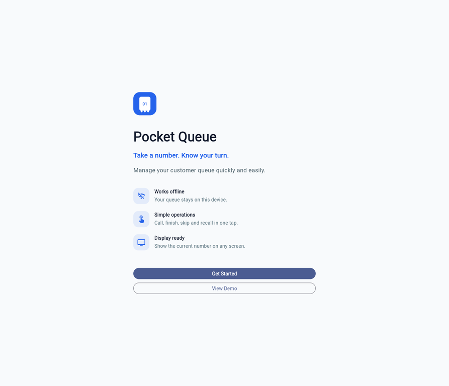
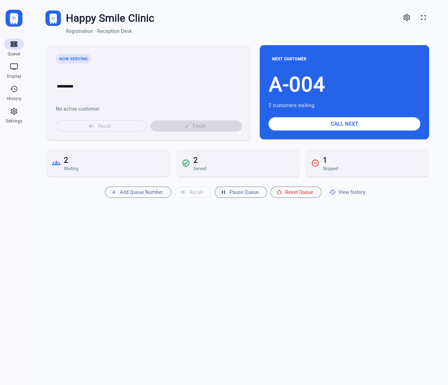
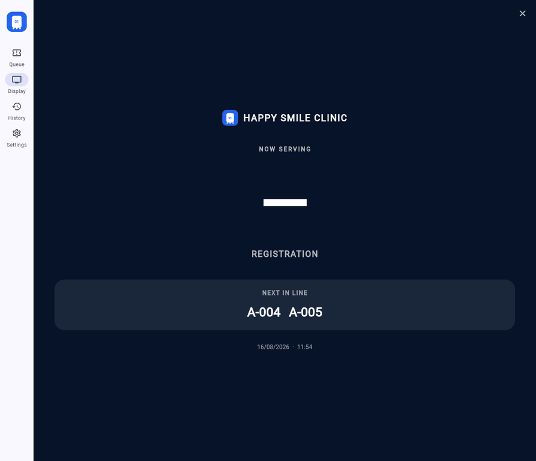
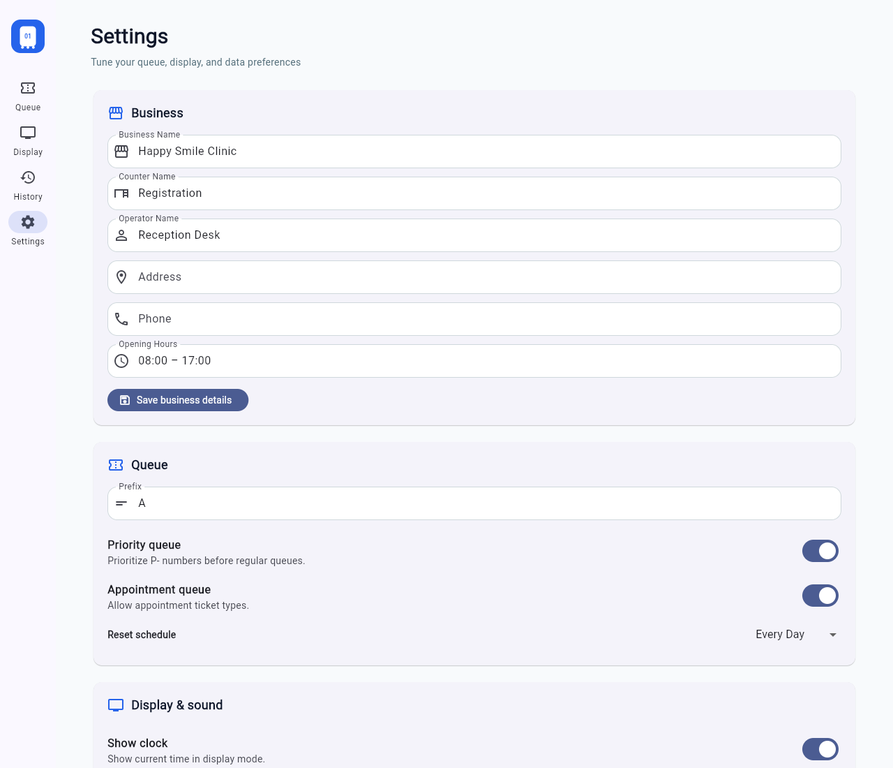

Queue operations
Generate regular, priority, and appointment tickets. Call next, recall, finish, skip, pause, resume, and reset the active queue.
Pocket Queue is a small, professional queue manager for clinics, salons, repair shops, restaurants, government counters, and customer service desks. It keeps the operator focused on the next customer while storing queue data locally on the device.
The Flutter application provides the complete MVP workflow described in the product specification. The queue screen prioritizes readability, large touch targets, high contrast, and direct operational actions. A customer does not need to install the app: the operator can show the built-in display mode on a tablet, monitor, or TV.
Generate regular, priority, and appointment tickets. Call next, recall, finish, skip, pause, resume, and reset the active queue.
Show the current ticket in extremely large typography with counter, next three tickets, date, and time.
Queue state and business settings remain available after a restart without requiring a backend or network connection.
Open completed or skipped queue details and review totals, average waiting, service time, longest wait, and hourly service bars.
Configure business details, prefix, reset schedule, priority/appointment queues, display flags, sound preferences, and CSV sharing.
Phones use stacked cards and bottom navigation. Wide screens use a two-column operational layout and navigation rail.
| Screen | Purpose | Primary actions |
|---|---|---|
| Welcome | Introduce the app and let an operator begin or view a demo. | Get Started, View Demo |
| Setup | Collect business, counter, and operator identity. | Continue |
| Configure queue | Set prefix, starting number, maximum number, and reset mode. | Save Queue |
| Queue | Operate the active queue in real time. | Add, Call Next, Recall, Finish, Skip, Pause, Reset |
| Display | Present the current ticket for customers. | Exit display mode |
| History | Review completed and skipped tickets. | Open detail, Statistics, Export CSV |
| Settings | Maintain business, queue, display, sound, and data preferences. | Save, toggle, Export, Delete, Reset |
The app is intentionally small and offline-first. The central QueueStore handles state transitions and persistence, while the UI is composed of focused screens and reusable cards. See the detailed architecture guide and data model guide.
QueueStore (ChangeNotifier) ├── Business settings ├── Queue settings ├── QueueEntry records └── JSON persistence via SharedPreferences MainShell ├── Queue ├── Display ├── History → Queue Detail / Statistics └── Settings
On first launch, the operator configures the service desk and queue prefix. Tickets are generated locally, ordered with priority tickets first and creation time second, and move through WAITING → SERVING → COMPLETED or SKIPPED. See the workflow reference.
Install dependencies, analyze, test, and build the debug APK with the commands below.
flutter pub get flutter analyze flutter test flutter build apk --debug
GitHub Actions repeats analysis, tests, and the APK build on every push and pull request. The generated APK is uploaded as an Actions artifact.
Use Add Queue Number to generate a ticket. The queue screen's empty state is intentional and directs the operator to the correct action.
Reset Queue is destructive for active tickets and therefore requires confirmation. Completed history remains available unless Delete History is selected.
CSV export opens the platform share flow. On a browser target it uses the web share implementation where supported.



